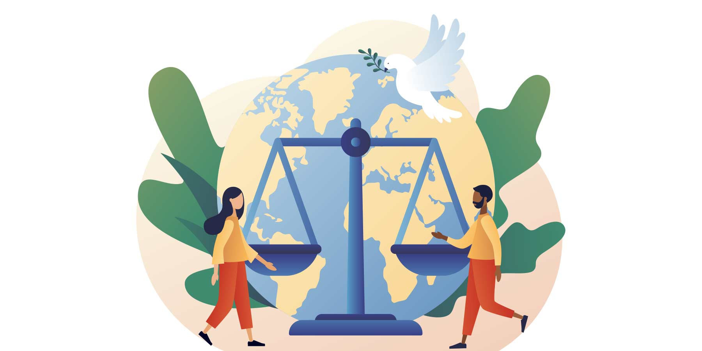
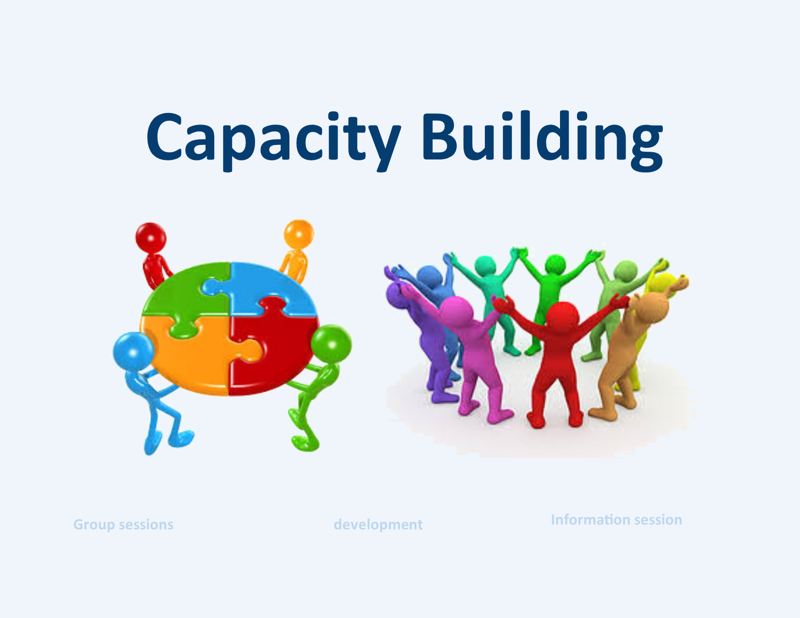
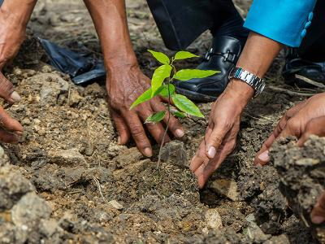

Transforming Kenya's WaSH systems through evidence-based advocacy, inclusive governance, and climate-smart action to ensure dignity for all.

WaSHVoice has evolved from a nascent social enterprise into a pivotal force within Kenya’s Water, Sanitation, and Hygiene landscape. We operate at the intersection of advocacy, sector coordination, and climate action.
Our work is anchored in the belief that the "WaSH Crisis" is fundamentally a failure of equity and governance. By positioning ourselves as a central knowledge hub, we unify fragmented sector actors to transform basic access into a governed, resilient ecosystem.
Annual economic drain from sanitation inaction targeted for recovery.
Economic value generated and returned per $1 invested.
Blended finance matching goal through systemic expansion models.
Launch of the National Sanitation Database 2.0 for real-time monitoring.
Addressing the critical economic imperative through evidence-based justice and ecological stewardship to withstand climate volatility.

Driving accountability to transform basic access into a just, inclusive, and rights-based service delivery model for marginalized groups.
Explore Priority
Cultivating expert leadership and technical proficiency to design and manage resilient systems through the Sani-Entrepreneurship Hub.
Explore PriorityLeveraging data-driven insights and Sectoral Empirical Analysis to challenge legacy systems and catalyze high-level policy shifts.
Explore Priority
Safeguarding ecological footprints by transitioning from static infrastructure to dynamic, circular sanitation systems.
Explore Priority